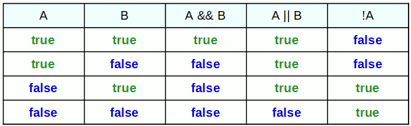

Expressions
Una expressió consta d'operadors i operands ( valors, variables, operadors i invocacions de mètodes) que s'avaluen com un únic valor. Les expressions es poden utilitzar en diversos contextos, com en assignacions, declaracions condicionals i bucles.
Operadors
Los operadores son elementos que permiten realizar diversas operaciones y manipulaciones en datos y variables. Estas operaciones pueden abarcar desde simples cálculos matemáticos hasta evaluaciones de condiciones lógicas y manipulación de datos a nivel de bits. Son símbolos o palabras clave que se utilizan para llevar a cabo estas acciones de manera eficiente. Veamos algunos de los operadores más importantes:
-
Operadores Aritméticos
Són símbols especials que s'utilitzen per a realitzar operacions matemàtiques en variables numèriques. Sempre requereixen dos operands pel que tots són operadors binaris.
| Operador | Nom | Funció | Exemple |
| + | Suma | Retorna el resultat de sumar els dos operands. | 5 + 3 |
| - | Resta | Retorna el resultat de restar a l'operand de l'esquerra l'operand de la dreta. | 15 - 12 |
| * | Multiplicació | Retorna el resultado de multiplicar els dos operands. | 3 * 9 |
| / | Divisió | Retorna el quocient resultant de dividir l'operand de l'esquerra entre l'operand de la dreta. Si els dos operands són sencers, el resultat també serà sencer. | 12 / 5 |
| % | Mòdul |
Retorna la resta de la divisió entre enters en dividir l'operand esquerre entre el dret. Si l'operador mòdul es utiiza amb operand reals retornarà també retorna la resta. El quocient de la divisió, en utilitzar l'operador %, sempre és un nombre enter. |
12 % 5 |
Exemple:
/* Operadors aritmètics */
public class ArithmeticOperators {
public static void main( String [] args ) {
double salad = 5.95; // calculate the cost of lunch
double water = .89;
System.out.println( “The cost of lunch is $” + ( salad + water ) );
int targetYear = 2011; // calculate your age as of a certain year
int birthYear = 1993;
System.out.println( “Your age in “ + targetYear + “ is “ + ( targetYear - birthYear ) );
int caloriesPerApple = 127; // calculate the total calories of apples
int numberOfApples = 3;
System.out.println( “The calories in “ + numberOfApples + “ apples is “ + ( caloriesPerApple * numberOfApples ) );
double miles = 426.8; // calculate miles per gallon
double gallons = 15.2;
double mileage = miles / gallons;
System.out.println( “The mileage is “ + mileage + “ miles per gallon.” );
}
}
-
Operadors d'assignació
Són fonamentals a Java ja que permeten assignar valors a variables. A través d'aquests operadors, es pot emmagatzemar informació en variables per al seu posterior ús en el programa. L'operador més comunament utilitzat és el signe igual ( = ), que assigna el valor de la dreta a la variable de l'esquerra. Per exemple, int x = 10; assigna el valor 10 a la variable x.
A l'esquerra de l'operador d'assignació sempre ha d'haver-hi una variable o constant. També es permeten assignacions múltiples com les següents:
c = a = b; //equivalent a c=(a=b);
c = a = b = 321; //asigna 321 a a, b y c
L'operador assignació es pot combinar amb els operadors aritmètics (entre altres), permetent modificar el valor de la variable al mateix temps que li assigna dita nova valor.
| Operador asignación compuesto | Equivalente | |
| += | v += 3; | v = v + 3; |
| -= | v -= 3; | v = v - 3 |
| *= | v *= 5; | v = v * 5; |
| /= | v /= 2; | v = v / 2; |
| %= | v %= 5; | v = v % 5; |
-
Operadors de comparació
Són essencials per a avaluar condicions en programes Java. Comparen dos valors i retornen un resultat booleà, és a dir, true si la comparació és vertadera i false si és falsa.
| Operador | Nom | Exemple |
| == | Igualtat | a == b |
| != | Diferent | a != b |
| > | Major que | a > b |
| < | Menor que | a < b |
| >= | Major o igual que | a >= 20 * 2 |
| <= | Menor o igual que | edat <= 17 |
-
Operadors lògics
Permeten combinar o invertir condicions lògiques en un programa Java. Els operadors lògics més comuns són && (AND lògic), || (OR lògic) i ! (NOT lògic).

En la taula anterior A i B són dues expressions que poden ser avaluada com true o false. Podem observar que:
- L'operador && retorna true si totes dues condicions són vertaderes.
- L'operador || retorna true si almenys una condició és vertadera.
- L'operador ! inverteix el valor d'una condició, és a dir, canvia true a false y viceversa.
-
Operadors d'increment i decrement
Els operadors d'increment ( ++ ) i decrement ( --) són útils per a modificar el valor d'una variable en una unitat. L'operador d'increment augmenta el valor de la variable en 1, mentre que l'operador de decrement el disminueix en 1. Aquests operadors són unaris perquè treballen amb un sol operant que ha de ser una variable, mai un literal o una constant.
És molt important el lloc en el qual es col·loca l'operador:
- Davant de l'operant
Primer modifica el valor de la variable i després retorna el valor resultant perquè puga ser utilitzada en el càlcul de l'expressió. Exemple:
a = 15;
b = ++a; // a -> 16; b -> 16
c = 2 * ++a; // a -> 17; c -> 34
En finalitzar l'execució de les tres línies, a tindrà el valor 17; b tindrà el valor 16 i c tindrà el valor 34.
- Darrere de l'operant
Primer es retorna el valor de la variable perquè puga ser utilitzat en el càlcul de l'expressió i finalment es modifica el valor de la variable. Exemple:
a = 15;
b = a--;
c = 2 * a--;
En finalitzar l'execució de les tres línies, a tindrà el valor 13; b tindrà el valor 15 i c tindrà el valor 28 ( 2 * 14).
-
Operadors de concatenació
En el context de cadenes de text (String), Java proporciona l'operador + per a la concatenació de cadenes. Aquest operador s'utilitza per a unir dos o més cadenes de text en una sola cadena.
String nom = "Juan";
String cognom = "Pérez";
String nomSencer = nom + " " + cognom; // nomSencer -> "Juan Pérez"
També es pot utilitzar el mètode concat() de la classe String per a concatenar cadenes.
-
 Operadors de bits
Operadors de bits
S'utilitzen per a realitzar operacions a nivell de bits en valors sencers. Aquests operadors permeten manipular dades binàries i realitzar operacions de desplaçament de bits. Exemples d'operadors de bits inclouen & (AND a nivell de bits), | (OR a nivell de bits), ^ (XOR a nivell de bits), << (desplaçament a l'esquerra) i >> (desplaçament a la dreta).
| Operador | Nom | Funció | Exemple |
| & |
AND bit a bit |
Realitza una operació AND bit-a-bit entre dos números. Per a cada posició del valor binari realitza un AND amb els dos bits de la mateixa posició dels operands. |
10 -> 0 0 0 0 1 0 1 0 |
| | | OR bit a bit (binari) |
Realitza una operació OR bit-a-bit entre dos números. Per a cada posició del valor binari realitza un OR amb els dos bits de la mateixa posició dels operands. |
10 -> 0 0 0 0 1 0 1 0 |
| ^ | XOR bit a bit (binari) |
Realitza una operació XOR bit-a-bit entre dos números. El resultat és true només quan els dos operands són diferents (un true i l'altre false). Per a cada posició del valor binari realitza un XOR amb els dos bits de la mateixa posició dels operands |
10 -> 0 0 0 0 1 0 1 0
|
| ~ | Complement a un (unari) |
Inverteix tots els bits d'un número. Afecta al signe (complement a 1). |
10 -> 0 0 0 0 1 0 1 0
|
| << | Desplaçament esquerra (binari) |
Desplaça cap a l'esquerra els bits de l'operand de l'esquerra tants llocs com indique l'operand de la dreta. El farciment per la dreta es fa amb zeros. valor_desplaçar << num_posicions |
10 -> 0 0 0 0 1 0 1 0
|
| >> |
Desplaçament dreta |
Desplaça cap a la dreta els bits del operands de la esquerra tants llocs com indique l'operand de la dreta. valor_desplaçar >> num_posicions |
10 -> 0 0 0 0 1 0 1 0
|
| >>> | Desplazamiento derecha sin signo | Similar a l'operador >> (desplaçament a la dreta), però sempre agrega un 0 a l'esquerra en lloc del bit de signe. Això significa que, independentment del signe del número, es realitza el desplaçament de bits a la dreta. |
int a = -10;
|
Els operadors de bits pot unir-se amb el d'assignació: &=; |=; ^=; ~= ; <<= ; >>= ; >>>= .